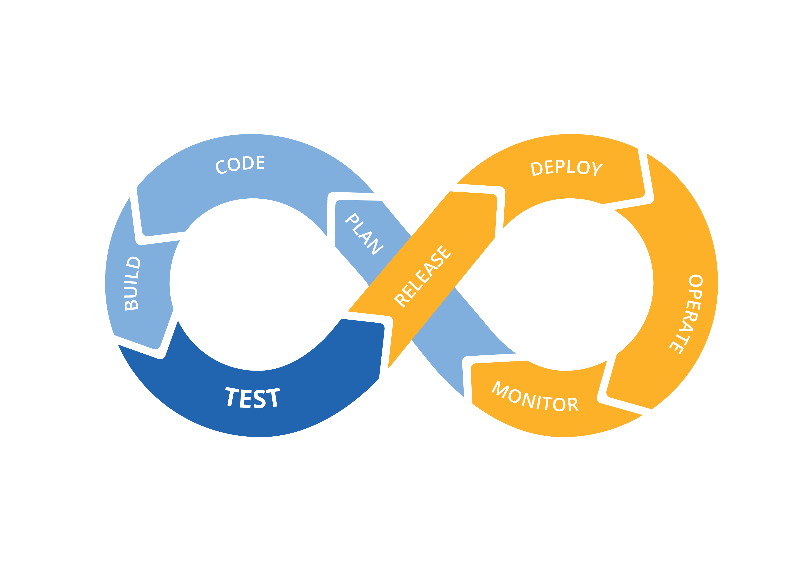

|  |
This is a SECOND test for MLMS uncompressed java application file(s) deployment via GithubThis is the home page for a java application used to illustrate the source directory organization of a web application utilizing the principles outlined in the Application Developer's Guide.Azfar Made some text changes to this page on Mon 08/27 12:08 pm |
To prove that they work, you can execute either of the following links: